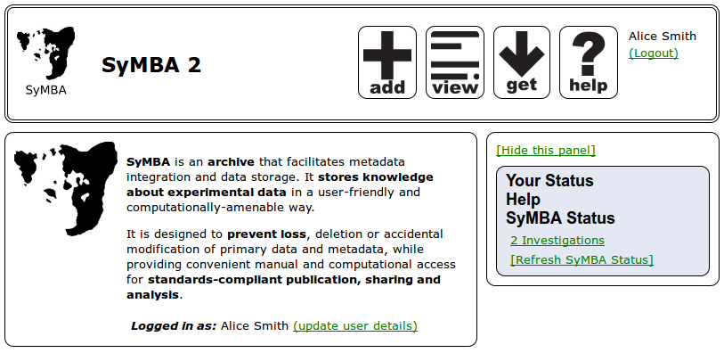
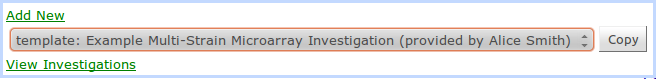
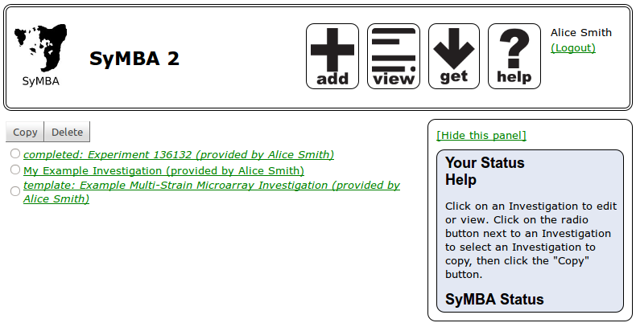
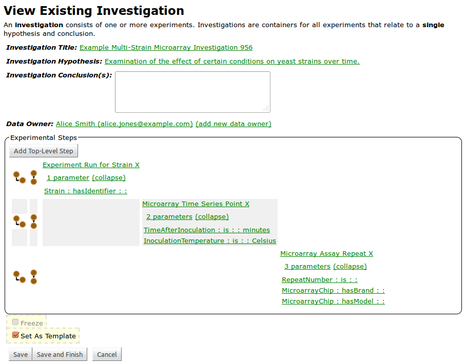
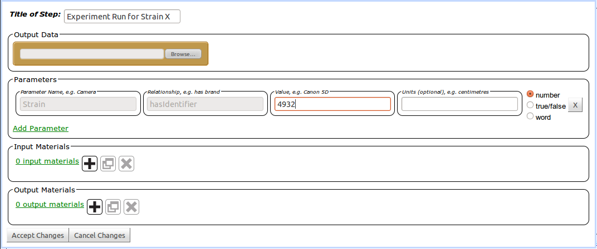
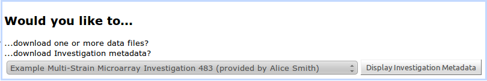
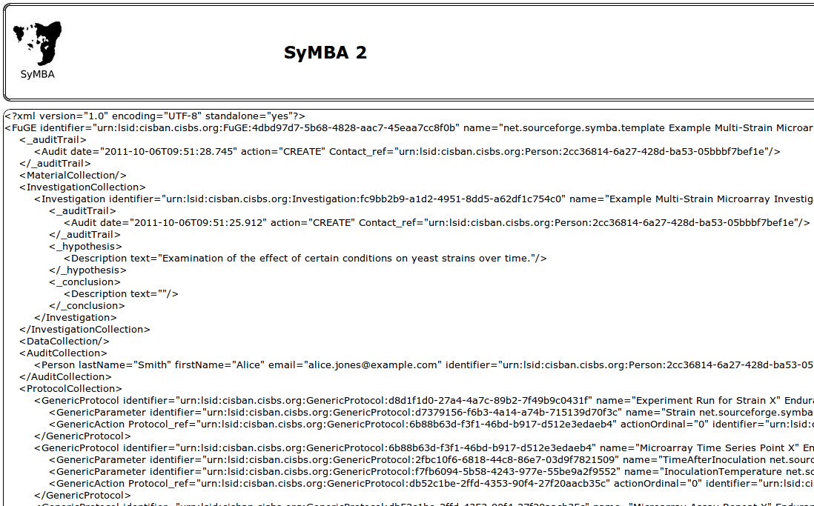

Many laboratories store raw data and metadata in disparate, interconnected resources such as spreadsheets, file stores, local databases and lab books. While these are useful tools for a conventional approach to biological research, they do not meet the needs of an environment where the generation of high throughput datasets is commonplace. Further downstream analysis of the raw data requires data to adequately annotated and available in a standard format. In many cases, the researcher carrying out the analysis will not be the same person who generated the data. SyMBA has been developed to meet the need for a centralised raw data repository that collates and stores data and captures sufficient metadata in an integrated fashion to facilitate downstream analysis, export and publication. This help page describes how SyMBA is used to create templates and generate FuGE-ML for download.
The main entry point for end users is a Web-based graphical user interface that displays a simplified view of the underlying data structure and allows upload of data and description of experimental metadata. The welcome screen is shown in the screenshot below. There are three main sections to the SyMBA web application which are named hereafter using compass directions for their position in the page. The header along the top of the page, or north panel, contains the SyMBA logo and name on the left, a variety of icons on the right, and the name of the user on the far right. The SyMBA logo will always take the user back to the welcome page. Named from left to right, the four icons on the right-hand side of the header are shortcuts to 'add' a new experiment, 'view' existing experiments, 'get' data files or metadata FuGE-ML for download, and browse the 'help' pages. If the user is not yet logged in, only the links to the welcome and help pages are active.
To the west is the main SyMBA usage panel. Initially, the west panel contains a short summary of SyMBA and a login form. Once the user begins work within SyMBA, the west panel displays summaries of experiments, the experimental metadata and much more. The east panel is a status panel providing both contextual help and status messages. It is optional, and can be hidden at any time by clicking on 'Hide this panel'.
If SyMBA is being used in a sandbox or test installation, the user may prefer to login with a pre-prepared guest account from the default installation of the application. This is accomplished by choosing 'Guest Account' from the pull-down menu of users in the west panel, and clicking Login. Otherwise, a new user may be created by clicking on 'add new user and log in' directly to the right of the login button. The user then fills out the contact form that appears and clicks Save Contact. The contact is saved and the user is automatically logged in. Having a named account allows the stored metadata to be identified with a particular user.
As described earlier, the right side of the north panel contains a number of quick link buttons. To quickly create a new investigation, clicking on the add button results in the appearance of a pop-up window as shown in the image below. This pop-up presents the user with three options. The first is to click on 'Add New', which will take the user directly to an empty investigation to begin filling in. The second is a pull-down menu of existing investigations. Selecting one of these and pressing the Copy button will take the user to the standard investigation form pre-populated with a copy of the selected investigation. Finally, the 'View Investigations' link allows the user to opt out of the add menu and instead view a list of existing investigations. This link works in a way identical to the view button from the north panel.
The view button present in the north panel takes the user to a summary of all investigations stored within SyMBA. The screenshot below shows an example summary page containing template, completed and standard investigations. Standard, modifiable investigations are shown in plain text, while read-only investigations are displayed in italics. Further, if an investigation is either completed or a template, this information is displayed in front of the investigation name. Both template and completed investigations are described in detail in the next section.
As explained in the contextual help section of the east panel, the user may either click on an investigation name to view its details or click on the radio button next to its name and then either Copy or Delete the investigation. SyMBA can be modified to disable or completely remove the Delete button.
If a user wishes to save a series of experimental steps for anyone to copy and use, a template can be created. The benefits of a template are
A template can either be created from scratch or based on an existing investigation. If an existing investigation is to be converted to a template, a copy should be made of the investigation first. Because the conversion removes all links to files and marks the investigation as read-only, the copy should then be the one converted to a template. All other information contained within each experimental step will be retained in the template. This includes parameters, descriptions, names, input materials and output materials. For parameters, the name of the parameter and the relationship the parameter name has with its value will be marked as read-only. This means that, if the user of a copy of the template wishes to fill in that parameter, they must retain the name and relationship already provided. More information on parameters is available in the next section. Once a set of experimental steps has been created, saving the investigation as a template simply requires the selection of the 'Set As Template' checkbox, as shown in the image below.
If the description of an investigation within SyMBA has been completed and all parameters and associated metadata have been filled in, the investigation can be frozen, which marks it as completed and prevents further modification. Freezing an investigation is achieved by selecting the 'Freeze' checkbox, visible in the figure above. Italics are used to mark read-only investigations in the summary of experiments as shown in the 'Investigation View' screenshot earlier in this document.
When a user is ready to start entering metadata and uploading data files, an existing template can be copied or a brand new experiment description can be created as described earlier. The act of copying or creation brings the user to the detailed investigation view where SyMBA users can create a new experiment, fill in information about the experiment and upload associated raw data files.
The previous screenshot shows an overview of the investigation detail page. Each experimental step can have zero or more parameters, input materials and output materials. Parameters are structured according to a statement of three required and one optional attributes, as shown in the screenshot below. These attributes are structured as Name-Relationship-Value-Unit, with the Unit as the optional addition. In templates the Value can also be missing, but in standard and completed investigations the Value attribute is mandatory. At any time, parameter statements can be deleted. While the Name-Relationship-Value portion of the parameter statement is similar to the Subject-Predicate-Object of RDF triples, RDF is not used within SyMBA.
FuGE parameters have three types: number, boolean and string literal. These types can be manually specified by the user by selecting the appropriate radio button at the end of the parameter input line, as shown in the above image. However, these parameter types are relatively easy to programmatically ascertain, and once a Value is provided SyMBA will automatically select the radio button corresponding to its best guess. This selection can be overridden by the user at any time.
Parameters are highly configurable and can be built to describe virtually any statements required by the user. Concentrations of reagents, types of equipment, taxonomic information and repeat numbers are just some of the vital pieces of experimental information which can be modelled with parameters. In theory, all materials could be included as parameters, but storing materials separately allows sets of commonly-used materials to be created and re-used across investigations.
The name and relationship attributes within parameters are ideal candidates for restriction using ontology terms. Although this functionality was partly implemented in SyMBA version 1.0, it has not yet been added to version 2.0. For instance, OBI could be used for equipment and protocol names, while RO could be used for some of the relationship attributes. In future equipment will be organised as materials are now, but for now can be modelled using parameters.
SyMBA uses and manipulates Java objects built from the FuGE XSD, converting upon request between those objects and FuGE-ML for download and batch upload. The get button is used to view and download the metadata for a given investigation in FuGE-ML. Te download menu shown below is a pop-up menu which appears when the 'get' button is pressed, while the image after it shows a partial screenshot of the resulting FuGE-ML.
 